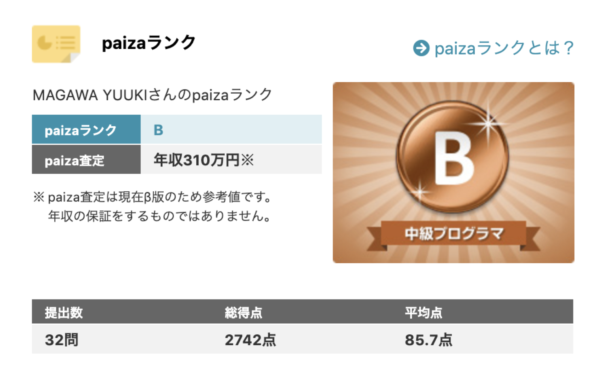
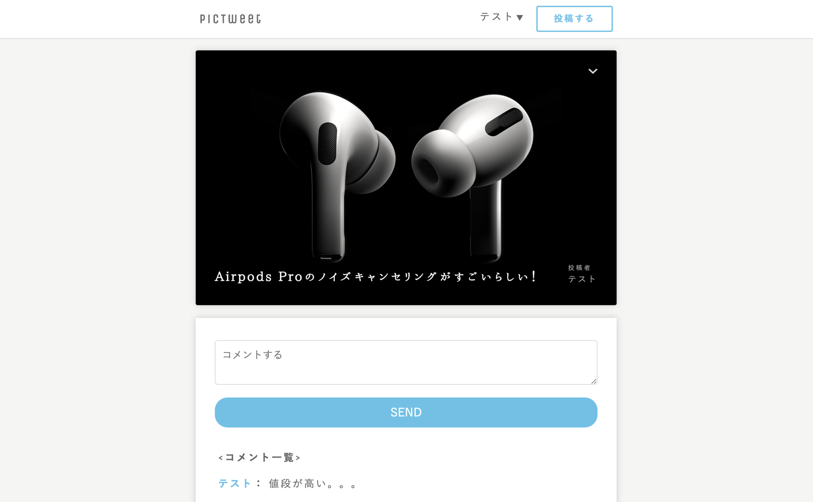
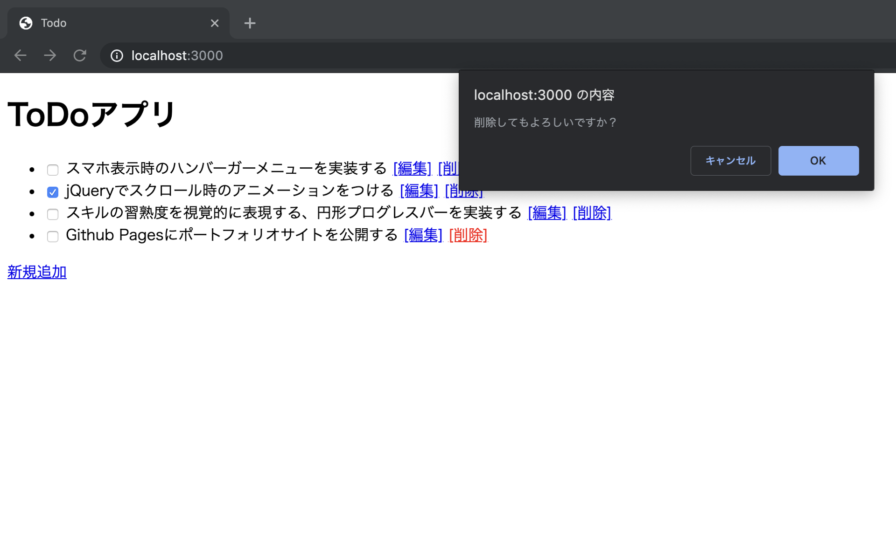

ABOUT
2000年生まれ、大阪府出身。
学生の頃からIT分野に興味があり、タッチタイピングの習得、
C言語とSwiftの基礎を独学で勉強するなどしていました。
高校卒業後は、諸事情によりプログラミングから離れ、
メーカーの建材商品部門に従事。
その後、再度エンジニアとしての道に挑戦したいと思い離職。
現在は、HTML5・CSS3・JavaScript・Ruby・SQL・Git・インフラ周り・
各種フレームワーク（jQuery・Ruby on Rails・Bootstrap）などを独学で学習しています。
在職中にはITパスポート試験を、
10月には基本情報技術者試験を受験し、無事合格しました。
SKILL
HTML5

CSS3

Bootstrap

JavaScript

jQuery

Ruby

Ruby on Rails

PHP

MySQL

Git / GitHub

Linux

AWS

やる気
Slack

PORTFOLIO

paizaランクBを達成

Twitter風SNSアプリケーション

簡易ToDoアプリケーション
近日公開
FAQ
-
保有資格を教えてください。
+現在、持っている資格は以下の通りです。
- 基本情報技術者
- ITパスポート
- 普通自動車免許
- 普通自動二輪車免許
-
あなたの長所と短所を教えてください。
+長所は検索力があることです。
エラーなど、何かわからないことがあっても、すぐに人に聞くのではなく、できる限り自分で調べるようにしています。
短所は漢字が苦手なところですが、その代わりタイピング速度にはかなり自信があります。
-
趣味を教えてください。
+趣味は、筋トレ・映画鑑賞・バイク・ゲームです。
筋トレは、週2〜4日のペースで約1年半ジムに通い続けています。身体だけでなく精神的にも成長できたと感じています。
映画は、洋画が特に好きで、おすすめの映画は「インターステラー」です。
-
このポートフォリオサイトを制作するにあたって得た知見と反省点を教えてください。
+このポートフォリオサイト設計にはBEMを採用しました。
BEMについて調べていくうえで、コーディング規則の重要性などを学べたと思います。
反省点としては、階層が深い要素の命名規則が明確でなかった点や、モバイルファーストで制作していなかった点です。